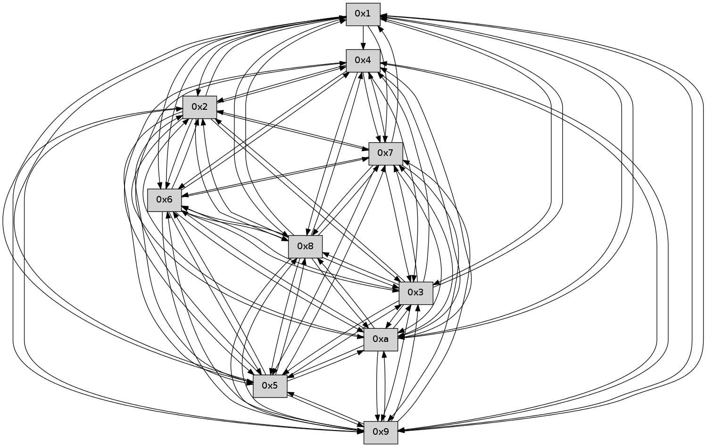

>> << IDX [start] -100 -25 -5 +0 +5 +25 +100 [245.537035942]
 Previous packets
----------------------------------------------------------------------
240.020114 beacon01(faad) #0 coord=01,02,03,04,05,06,07,0a,09,08 cycle=688.0ms assoc
-- color-indic=0 64 85 e0
240.030097 beacon02(faad) #0 coord=01,02,03,04,05,06,07,0a,09,08 cycle=688.0ms assoc 64 16 d1
240.040097 beacon03(faad) #0 coord=01,02,03,04,05,06,07,0a,09,08 cycle=688.0ms assoc 64 6c 9c
240.050097 beacon04(faad) #0 coord=01,02,03,04,05,06,07,0a,09,08 cycle=688.0ms assoc 64 1b 76
240.060096 beacon05(faad) #0 coord=01,02,03,04,05,06,07,0a,09,08 cycle=688.0ms assoc 64 61 3b
240.070098 beacon06(faad) #0 coord=01,02,03,04,05,06,07,0a,09,08 cycle=688.0ms assoc 64 ef ec
240.080097 beacon07(faad) #0 coord=01,02,03,04,05,06,07,0a,09,08 cycle=688.0ms assoc 64 95 a1
240.090103 beacon0a(faad) #0 coord=01,02,03,04,05,06,07,0a,09,08 cycle=688.0ms assoc 64 e4 aa
240.100103 beacon09(faad) #0 coord=01,02,03,04,05,06,07,0a,09,08 cycle=688.0ms assoc 64 6a 7d
240.110103 beacon08(faad) #0 coord=01,02,03,04,05,06,07,0a,09,08 cycle=688.0ms assoc 64 10 30
240.121582 [Hello(3): seq=158 sym=5,7,6,4,2,8,9,10,1 sysInfo= stat=5:9,0,0,0/7:11,0,0,0/6:7,0,0,0/4:4,0,0,0/2:7,0,0,0/8:12,0,0,0/9:7,0,0,0/10:11,0,0,0/1:11,0,0,0]
240.125886 [Hello(2): seq=155 sym=4,5,7,6,3,9,8,10,1 sysInfo= stat=4:1,0,0,0/5:5,0,0,0/7:3,0,0,0/6:8,0,0,0/3:15,0,0,0/9:9,0,0,0/8:6,0,0,0/10:2,0,0,0/1:0,0,0,0]
240.129876 [Hello(1): seq=66 sym=4,2,9,5,10,3,8,6,7 sysInfo= stat=4:1,0,0,0/2:6,0,0,0/9:5,0,0,0/5:8,0,0,0/10:0,0,0,0/3:1,0,0,0/8:0,0,0,0/6:10,0,0,0/7:10,0,0,0]
240.133499 [Hello(4): seq=158 sym=5,7,6,2,9,8,10,1 sysInfo= stat=5:4,0,0,0/7:2,0,0,0/6:6,0,0,0/2:6,0,0,0/9:7,0,0,0/8:7,0,0,0/10:8,0,0,0/1:1,0,0,0]
240.145110 [Hello(5): seq=158 sym=7,6,4,2,9,8,10 sysInfo= stat=7:13,0,0,0/6:11,0,0,0/4:0,0,0,0/2:11,0,0,0/9:6,0,0,0/8:15,0,0,0/10:6,0,0,0]
----------------------------------------------------------------------
240.808247 beacon01(faad) #0 coord=01,02,03,04,05,06,07,0a,09,08 cycle=688.0ms assoc
-- color-indic=0 64 39 e5
240.818229 beacon02(faad) #0 coord=01,02,03,04,05,06,07,0a,09,08 cycle=688.0ms assoc 64 aa d4
240.828230 beacon03(faad) #0 coord=01,02,03,04,05,06,07,0a,09,08 cycle=688.0ms assoc 64 d0 99
240.838230 beacon04(faad) #0 coord=01,02,03,04,05,06,07,0a,09,08 cycle=688.0ms assoc 64 a7 73
240.848231 beacon05(faad) #0 coord=01,02,03,04,05,06,07,0a,09,08 cycle=688.0ms assoc 64 dd 3e
240.858231 beacon06(faad) #0 coord=01,02,03,04,05,06,07,0a,09,08 cycle=688.0ms assoc 64 53 e9
240.868229 beacon07(faad) #0 coord=01,02,03,04,05,06,07,0a,09,08 cycle=688.0ms assoc 64 29 a4
240.878234 beacon0a(faad) #0 coord=01,02,03,04,05,06,07,0a,09,08 cycle=688.0ms assoc 64 58 af
240.888236 beacon09(faad) #0 coord=01,02,03,04,05,06,07,0a,09,08 cycle=688.0ms assoc 64 d6 78
240.898235 beacon08(faad) #0 coord=01,02,03,04,05,06,07,0a,09,08 cycle=688.0ms assoc 64 ac 35
240.909723 [Hello(10): seq=90 sym=6,3,2,5,9,8,7,4,1 sysInfo= stat=6:1,0,0,0/3:0,0,0,0/2:1,0,0,0/5:3,0,0,0/9:0,0,0,0/8:0,0,0,0/7:1,0,0,0/4:13,0,0,0/1:9,0,0,0]
240.912190 [Hello(6): seq=158 sym=2,3,5,4,7,9,8,10,1 sysInfo= stat=2:4,0,0,0/3:0,0,0,0/5:9,0,0,0/4:6,0,0,0/7:0,0,0,0/9:5,0,0,0/8:4,0,0,0/10:2,0,0,0/1:2,0,0,0]
240.914655 [Hello(9): seq=101 sym=5,2,3,4,7,6,8,10,1 sysInfo= stat=5:6,0,0,0/2:6,0,0,0/3:11,0,0,0/4:2,0,0,0/7:6,0,0,0/6:14,0,0,0/8:13,0,0,0/10:12,0,0,0/1:2,0,0,0]
240.923726 [Hello(7): seq=158 sym=2,3,5,6,4,8,9,10,1 sysInfo= stat=2:15,0,0,0/3:0,0,0,0/5:12,0,0,0/6:10,0,0,0/4:1,0,0,0/8:0,0,0,0/9:1,0,0,0/10:12,0,0,0/1:5,0,0,0]
240.927532 [Hello(8): seq=101 sym=5,2,3,4,7,6,9,10,1 sysInfo= stat=5:0,0,0,0/2:15,0,0,0/3:3,0,0,0/4:5,0,0,0/7:6,0,0,0/6:10,0,0,0/9:14,0,0,0/10:9,0,0,0/1:6,0,0,0]
----------------------------------------------------------------------
241.596377 beacon01(faad) #0 coord=01,02,03,04,05,06,07,0a,09,08 cycle=688.0ms assoc
-- color-indic=0 64 0d fd
241.606360 beacon02(faad) #0 coord=01,02,03,04,05,06,07,0a,09,08 cycle=688.0ms assoc 64 9e cc
241.616360 beacon03(faad) #0 coord=01,02,03,04,05,06,07,0a,09,08 cycle=688.0ms assoc 64 e4 81
241.626360 beacon04(faad) #0 coord=01,02,03,04,05,06,07,0a,09,08 cycle=688.0ms assoc 64 93 6b
241.636359 beacon05(faad) #0 coord=01,02,03,04,05,06,07,0a,09,08 cycle=688.0ms assoc 64 e9 26
241.646360 beacon06(faad) #0 coord=01,02,03,04,05,06,07,0a,09,08 cycle=688.0ms assoc 64 67 f1
241.656361 beacon07(faad) #0 coord=01,02,03,04,05,06,07,0a,09,08 cycle=688.0ms assoc 64 1d bc
241.666367 beacon0a(faad) #0 coord=01,02,03,04,05,06,07,0a,09,08 cycle=688.0ms assoc 64 6c b7
241.676366 beacon09(faad) #0 coord=01,02,03,04,05,06,07,0a,09,08 cycle=688.0ms assoc 64 e2 60
241.686366 beacon08(faad) #0 coord=01,02,03,04,05,06,07,0a,09,08 cycle=688.0ms assoc 64 98 2d
241.697544 [Hello(1): seq=67 sym=4,2,9,5,10,3,8,6,7 sysInfo= stat=4:2,0,0,0/2:6,0,0,0/9:6,0,0,0/5:9,0,0,0/10:1,0,0,0/3:1,0,0,0/8:1,0,0,0/6:11,0,0,0/7:11,0,0,0]
241.700662 [Hello(4): seq=159 sym=5,7,6,2,9,8,10,1 sysInfo= stat=5:5,0,0,0/7:3,0,0,0/6:7,0,0,0/2:6,0,0,0/9:8,0,0,0/8:8,0,0,0/10:9,0,0,0/1:1,0,0,0]
241.708660 [Hello(2): seq=156 sym=4,5,7,6,3,9,8,10,1 sysInfo= stat=4:2,0,0,0/5:6,0,0,0/7:4,0,0,0/6:9,0,0,0/3:15,0,0,0/9:10,0,0,0/8:7,0,0,0/10:3,0,0,0/1:1,0,0,0]
241.715990 [Hello(3): seq=159 sym=5,7,6,4,2,8,9,10,1 sysInfo= stat=5:10,0,0,0/7:12,0,0,0/6:8,0,0,0/4:5,0,0,0/2:8,0,0,0/8:13,0,0,0/9:8,0,0,0/10:12,0,0,0/1:12,0,0,0]
241.718678 [Hello(5): seq=159 sym=7,6,4,2,9,8,10 sysInfo= stat=7:14,0,0,0/6:12,0,0,0/4:0,0,0,0/2:11,0,0,0/9:7,0,0,0/8:0,0,0,0/10:7,0,0,0]
----------------------------------------------------------------------
242.384508 beacon01(faad) #0 coord=01,02,03,04,05,06,07,0a,09,08 cycle=688.0ms assoc
-- color-indic=0 64 b1 f8
242.394490 beacon02(faad) #0 coord=01,02,03,04,05,06,07,0a,09,08 cycle=688.0ms assoc 64 22 c9
242.404491 beacon03(faad) #0 coord=01,02,03,04,05,06,07,0a,09,08 cycle=688.0ms assoc 64 58 84
242.414491 beacon04(faad) #0 coord=01,02,03,04,05,06,07,0a,09,08 cycle=688.0ms assoc 64 2f 6e
242.424491 beacon05(faad) #0 coord=01,02,03,04,05,06,07,0a,09,08 cycle=688.0ms assoc 64 55 23
242.434491 beacon06(faad) #0 coord=01,02,03,04,05,06,07,0a,09,08 cycle=688.0ms assoc 64 db f4
242.444492 beacon07(faad) #0 coord=01,02,03,04,05,06,07,0a,09,08 cycle=688.0ms assoc 64 a1 b9
242.454496 beacon0a(faad) #0 coord=01,02,03,04,05,06,07,0a,09,08 cycle=688.0ms assoc 64 d0 b2
242.464496 beacon09(faad) #0 coord=01,02,03,04,05,06,07,0a,09,08 cycle=688.0ms assoc 64 5e 65
242.474496 beacon08(faad) #0 coord=01,02,03,04,05,06,07,0a,09,08 cycle=688.0ms assoc 64 24 28
242.490409 [Hello(8): seq=102 sym=5,2,3,4,7,6,9,10,1 sysInfo= stat=5:1,0,0,0/2:0,0,0,0/3:4,0,0,0/4:6,0,0,0/7:6,0,0,0/6:10,0,0,0/9:14,0,0,0/10:9,0,0,0/1:7,0,0,0]
242.494511 [Hello(9): seq=102 sym=5,2,3,4,7,6,8,10,1 sysInfo= stat=5:7,0,0,0/2:7,0,0,0/3:12,0,0,0/4:3,0,0,0/7:7,0,0,0/6:14,0,0,0/8:14,0,0,0/10:12,0,0,0/1:3,0,0,0]
242.501732 [Hello(10): seq=91 sym=6,3,2,5,9,8,7,4,1 sysInfo= stat=6:2,0,0,0/3:1,0,0,0/2:2,0,0,0/5:4,0,0,0/9:1,0,0,0/8:1,0,0,0/7:2,0,0,0/4:14,0,0,0/1:10,0,0,0]
----------------------------------------------------------------------
243.172640 beacon01(faad) #0 coord=01,02,03,04,05,06,07,0a,09,08 cycle=688.0ms assoc
-- color-indic=0 64 75 f6
243.182622 beacon02(faad) #0 coord=01,02,03,04,05,06,07,0a,09,08 cycle=688.0ms assoc 64 e6 c7
243.192623 beacon03(faad) #0 coord=01,02,03,04,05,06,07,0a,09,08 cycle=688.0ms assoc 64 9c 8a
243.202623 beacon04(faad) #0 coord=01,02,03,04,05,06,07,0a,09,08 cycle=688.0ms assoc 64 eb 60
243.212622 beacon05(faad) #0 coord=01,02,03,04,05,06,07,0a,09,08 cycle=688.0ms assoc 64 91 2d
243.222623 beacon06(faad) #0 coord=01,02,03,04,05,06,07,0a,09,08 cycle=688.0ms assoc 64 1f fa
243.232623 beacon07(faad) #0 coord=01,02,03,04,05,06,07,0a,09,08 cycle=688.0ms assoc 64 65 b7
243.242628 beacon0a(faad) #0 coord=01,02,03,04,05,06,07,0a,09,08 cycle=688.0ms assoc 64 14 bc
243.252628 beacon09(faad) #0 coord=01,02,03,04,05,06,07,0a,09,08 cycle=688.0ms assoc 64 9a 6b
243.262629 beacon08(faad) #0 coord=01,02,03,04,05,06,07,0a,09,08 cycle=688.0ms assoc 64 e0 26
243.274707 [Hello(5): seq=160 sym=7,6,4,9,8,10 sysInfo= stat=7:15,0,0,0/6:12,0,0,0/4:0,0,0,0/9:8,0,0,0/8:1,0,0,0/10:8,0,0,0]
243.277093 [Hello(3): seq=160 sym=5,7,6,4,2,8,9,10,1 sysInfo= stat=5:11,0,0,0/7:12,0,0,0/6:9,0,0,0/4:5,0,0,0/2:8,0,0,0/8:14,0,0,0/9:9,0,0,0/10:13,0,0,0/1:12,0,0,0]
243.280361 [Hello(1): seq=68 sym=4,2,9,5,10,3,8,6,7 sysInfo= stat=4:3,0,0,0/2:7,0,0,0/9:7,0,0,0/5:10,0,0,0/10:2,0,0,0/3:2,0,0,0/8:2,0,0,0/6:11,0,0,0/7:11,0,0,0]
243.285252 [Hello(2): seq=157 sym=4,5,7,6,3,9,8,10,1 sysInfo= stat=4:2,0,0,0/5:7,0,0,0/7:5,0,0,0/6:9,0,0,0/3:0,0,0,0/9:11,0,0,0/8:8,0,0,0/10:4,0,0,0/1:1,0,0,0]
243.291138 [Hello(4): seq=160 sym=5,7,6,2,3,9,8,10,1 sysInfo= stat=5:6,0,0,0/7:3,0,0,0/6:8,0,0,0/2:7,0,0,0/3:0,0,0,0/9:9,0,0,0/8:9,0,0,0/10:10,0,0,0/1:1,0,0,0]
----------------------------------------------------------------------
243.960771 beacon01(faad) #0 coord=01,02,03,04,05,06,07,0a,09,08 cycle=688.0ms assoc
-- color-indic=0 64 c9 f3
243.970752 beacon02(faad) #0 coord=01,02,03,04,05,06,07,0a,09,08 cycle=688.0ms assoc 64 5a c2
243.980752 beacon03(faad) #0 coord=01,02,03,04,05,06,07,0a,09,08 cycle=688.0ms assoc 64 20 8f
243.990754 beacon04(faad) #0 coord=01,02,03,04,05,06,07,0a,09,08 cycle=688.0ms assoc 64 57 65
244.010754 beacon06(faad) #0 coord=01,02,03,04,05,06,07,0a,09,08 cycle=688.0ms assoc 64 a3 ff
244.020755 beacon07(faad) #0 coord=01,02,03,04,05,06,07,0a,09,08 cycle=688.0ms assoc 64 d9 b2
244.030759 beacon0a(faad) #0 coord=01,02,03,04,05,06,07,0a,09,08 cycle=688.0ms assoc 64 a8 b9
244.040759 beacon09(faad) #0 coord=01,02,03,04,05,06,07,0a,09,08 cycle=688.0ms assoc 64 26 6e
244.050758 beacon08(faad) #0 coord=01,02,03,04,05,06,07,0a,09,08 cycle=688.0ms assoc 64 5c 23
244.062238 [Hello(6): seq=160 sym=2,3,5,4,7,9,8,10,1 sysInfo= stat=2:6,0,0,0/3:2,0,0,0/5:11,0,0,0/4:8,0,0,0/7:1,0,0,0/9:7,0,0,0/8:6,0,0,0/10:3,0,0,0/1:4,0,0,0]
244.065880 [Hello(8): seq=103 sym=5,2,3,4,7,6,9,10,1 sysInfo= stat=5:2,0,0,0/2:1,0,0,0/3:5,0,0,0/4:7,0,0,0/7:6,0,0,0/6:10,0,0,0/9:15,0,0,0/10:10,0,0,0/1:8,0,0,0]
244.072550 [Hello(7): seq=160 sym=2,3,5,6,4,8,9,10,1 sysInfo= stat=2:1,0,0,0/3:2,0,0,0/5:14,0,0,0/6:10,0,0,0/4:3,0,0,0/8:2,0,0,0/9:2,0,0,0/10:13,0,0,0/1:7,0,0,0]
244.075265 [Hello(10): seq=92 sym=6,3,2,5,9,8,7,4,1 sysInfo= stat=6:2,0,0,0/3:2,0,0,0/2:3,0,0,0/5:5,0,0,0/9:1,0,0,0/8:1,0,0,0/7:2,0,0,0/4:15,0,0,0/1:11,0,0,0]
244.082484 [Hello(9): seq=103 sym=5,2,3,4,7,6,8,10,1 sysInfo= stat=5:8,0,0,0/2:8,0,0,0/3:13,0,0,0/4:4,0,0,0/7:7,0,0,0/6:14,0,0,0/8:14,0,0,0/10:13,0,0,0/1:4,0,0,0]
----------------------------------------------------------------------
244.748902 beacon01(faad) #0 coord=01,02,03,04,05,06,07,0a,09,08 cycle=688.0ms assoc
-- color-indic=0 64 1d c6
244.758884 beacon02(faad) #0 coord=01,02,03,04,05,06,07,0a,09,08 cycle=688.0ms assoc 64 8e f7
244.768885 beacon03(faad) #0 coord=01,02,03,04,05,06,07,0a,09,08 cycle=688.0ms assoc 64 f4 ba
244.778885 beacon04(faad) #0 coord=01,02,03,04,05,06,07,0a,09,08 cycle=688.0ms assoc 64 83 50
244.788884 beacon05(faad) #0 coord=01,02,03,04,05,06,07,0a,09,08 cycle=688.0ms assoc 64 f9 1d
244.798886 beacon06(faad) #0 coord=01,02,03,04,05,06,07,0a,09,08 cycle=688.0ms assoc 64 77 ca
244.808886 beacon07(faad) #0 coord=01,02,03,04,05,06,07,0a,09,08 cycle=688.0ms assoc 64 0d 87
244.818890 beacon0a(faad) #0 coord=01,02,03,04,05,06,07,0a,09,08 cycle=688.0ms assoc 64 7c 8c
244.828889 beacon09(faad) #0 coord=01,02,03,04,05,06,07,0a,09,08 cycle=688.0ms assoc 64 f2 5b
244.838890 beacon08(faad) #0 coord=01,02,03,04,05,06,07,0a,09,08 cycle=688.0ms assoc 64 88 16
244.850088 [Hello(1): seq=69 sym=4,2,9,5,10,3,8,6,7 sysInfo= stat=4:4,0,0,0/2:8,0,0,0/9:8,0,0,0/5:10,0,0,0/10:3,0,0,0/3:2,0,0,0/8:3,0,0,0/6:12,0,0,0/7:12,0,0,0]
244.853368 [Hello(5): seq=161 sym=7,6,4,3,1,9,8,10,2 sysInfo= stat=7:0,0,0,0/6:13,0,0,0/4:1,0,0,0/3:0,0,0,0/1:0,0,0,0/9:9,0,0,0/8:2,0,0,0/10:9,0,0,0/2:0,0,0,0]
244.857373 [Hello(4): seq=161 sym=5,7,6,2,3,9,8,10 sysInfo= stat=5:6,0,0,0/7:4,0,0,0/6:9,0,0,0/2:7,0,0,0/3:0,0,0,0/9:10,0,0,0/8:10,0,0,0/10:11,0,0,0]